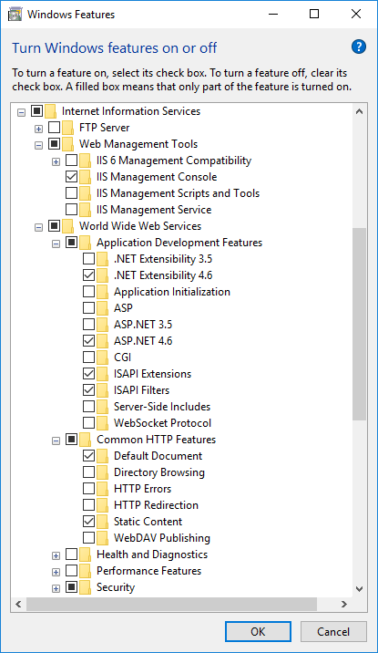
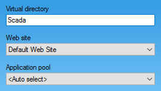

Figure 1. Windows 7 .NET components
Rapid SCADA requires certain Windows components to be installed. Go to Control Panel > Programs > Turn Windows features on or off. The required compontns of Microsoft .NET Framework are shown in Figures 1 and 3. Pay attention that Windows Communication Foundation child components of Microsoft .NET Framework 3.5 must be turned off.
The Webstation application requires Internet Information Services (IIS) that is a one of Windows features. Webstation would be inoperable unless the set of certain IIS features were turned on. Figures 2 and 4 show what features have to be installed. During the web application setup the availability of these features is checked by the installer.
Figure 1. Windows 7 .NET components

Figure 2. Windows 7 IIS components

Figure 3. Windows 10 .NET components

Figure 4. Windows 10 IIS components
Execute ScadaSetup.exe to start installation. A user account that has administrative rights should be used. The installer is shown in Figure 5.
Microsoft .NET Framework 4.0 is required to run Rapid SCADA. It will be installed automatically during the installation process if necessary. In case of using outdated operating system such as Windows XP or Windows Server 2003, Microsoft .NET Framework 3.5 SP1 has to be downloaded and installed first.

Figure 5. Rapid SCADA installer
Before the installation starts, user is asked for choosing the applications and the installation directory (see Figures 5 and 6). This directory specifies the location of the entire software. The installer creates subdirectories required for the chosen applications. The default directory C:\SCADA is recommended due to simplifying configuring the applications.

Figure 6. Choosing the installation directory
The web application installation options (see Figure 7) are agreed with a system administrator. If there are no specific requirements for the web application, you should use the default values.

Figure 7. Web application installation options
When installation is completed, it is recommended to check that the Scada web application uses an application pool having .NET 4.0 runtime version and integrated pipeline mode. IIS management console path is Control Panel > System and Security > Administrative Tools > Internet Information Services (IIS) Manager.